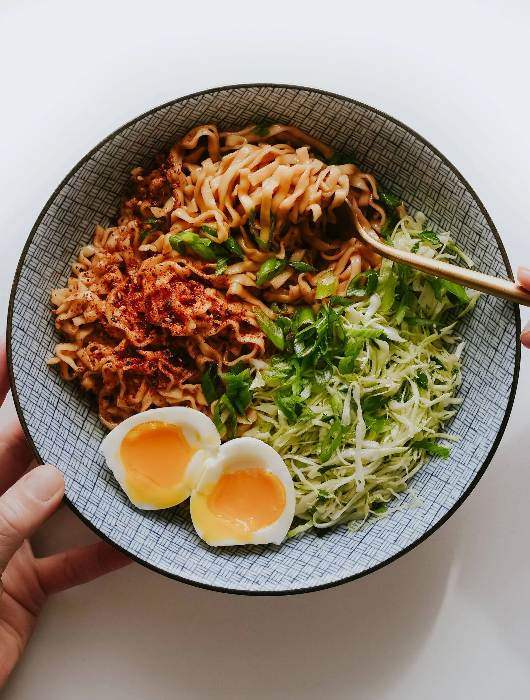

One of my favorite back-pocket recipes! Packaged noodles for ease, butter for creaminess, honey for sweetness, and sesame oil for depth. Just tangly slips of joy!
Make the noodles: Cook the noodles according to package directions, including adding in the little sauce packet.
Add the extras: Once prepared, toss hot noodles gently with the butter, honey, and sesame oil. Taste and adjust to however you like it. It should be silky when hot but it will get more sticky the longer you wait – if it’s too sticky, add a bit of warm water to loosen it which will emulsify and make it just a little creamy. It’s perfect.
Finish and serve: Finish with chili crisp, scallions, or some kind of sesame or spicy sprinkle! Ideal little snack, or you can make it more of a rounded out meal by serving with a fried egg and/or a salad. Or ground chicken. Or shrimp. It’s the kind of thing that’s good with everything.